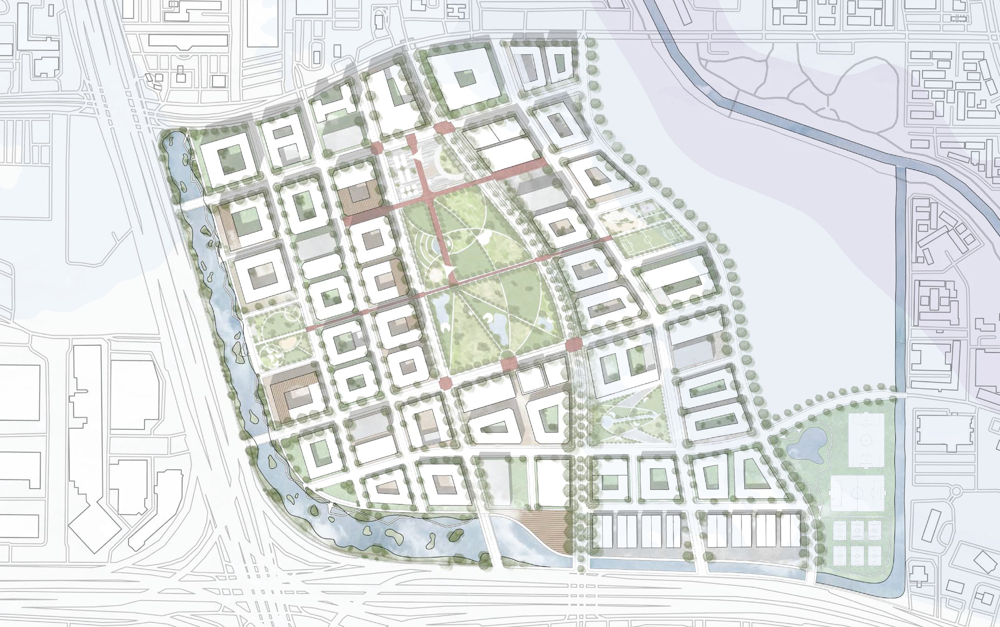
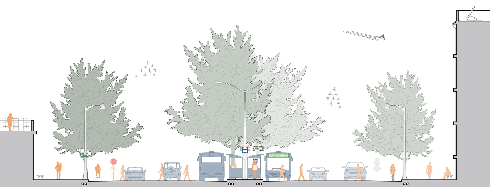
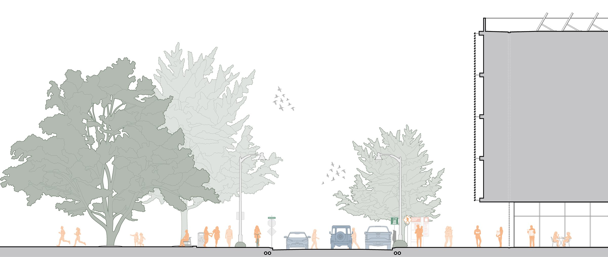
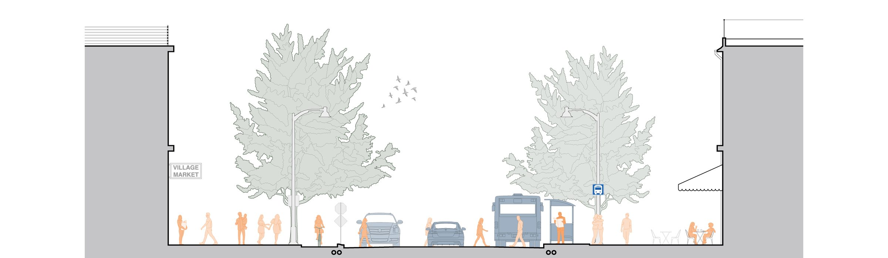
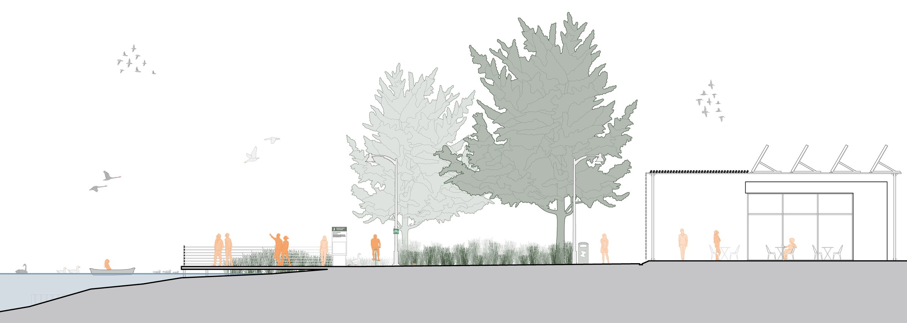
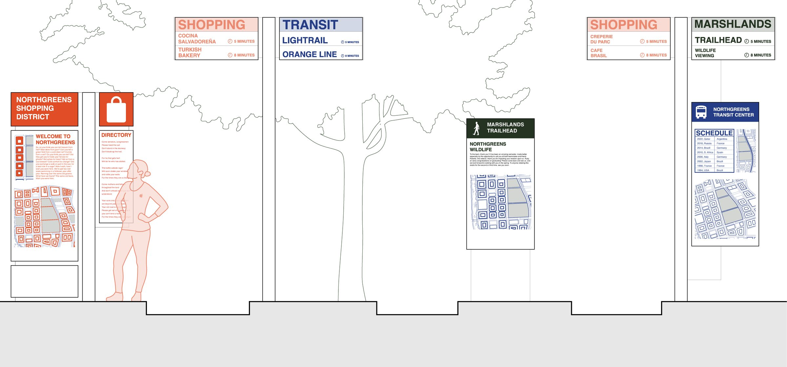

Academic
Dead Mall Fall
Revitalizing the neighborhood around Greenspoint Mall
Houston, TX, USA

Overview
Dead Mall Fall is an urban design and planning project based in Houston, Texas. “Dead malls” are once-popular commercial centers that now sit abandoned for many reasons, among them shifts in shopping habits that have made many brick-and-mortar stores obsolete. As a studio, we identified dead mall sites across Houston and researched the history, culture and demographics of the areas around them. This project is sited at Greenspoint Mall, once a popular shopping center at I-45 North and Beltway 8, which with its surroundings now sits largely unused. It examines design strategies for improving and revitalizing the Greenspoint neighborhood, with an emphasis on ecological sustainability, multi-modal transportation, walkability, community safety and economic prosperity.
Reimagining the Right of Way

Boulevards: Primary Roads
Boulevards are a community’s largest traffic arteries. Here the primary roads into Greenspoint are redesigned with more room for public transit, cycling and pedestrians. Wide sidewalks create safe, walkable areas, and protected bike lanes encourage people to give up the personal car as their only way of getting around.

Commercial Avenues and Greenspaces
Redesigned “Main Street” shopping and commercial streets are central to a vibrant, lively community. Commercial space brings jobs and economic movement to Greenspoint, and encourages residents and visitors to spend time in the neighborhood. Greenspaces close to where people live and work draw them outdoors and encourage travel on foot.

Residential Streets
Narrower residential streets with wider sidewalks and amenity zones give residents and visitors safe, walkable routes between home, local shops and a favorite café. Less vehicular traffic lets cyclists share the road with drivers, and public transit increases mobility for everyone in the area.

Trails and Footpaths
Parks and greenspaces are vital to a healthy community. Dedicated space for outdoor recreation and exercise encourages people to spend more time outside. A subtler benefit is flood mitigation and rainwater retention.
Greenspoint for People

Wayfinding Signage
Pedestrian, cyclist and transit wayfinding gives the community a stronger sense of identity. Clearly marked paths, transit routes and maps make people more comfortable living in, working in and visiting Greenspoint. A parent confident their child can find the way to school or a café is more open to letting them walk or bike there instead of being driven.